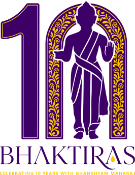

Jay Swaminarayan

Celebrating 10 years
with Ghanshyam Maharaj
with Ghanshyam Maharaj
Saturday 14th – Sunday 22nd August 2027
The whole utsav,
in your pocket
in your pocket
Daily satsang puzzles
Wordle, Connections, Crossword — a new one every day.
Niyams together.
Seva as a team.
Seva as a team.
14 – 22 August 2027
Shree KS Swaminarayan Temple Woolwich
Shree KS Swaminarayan Temple Woolwich